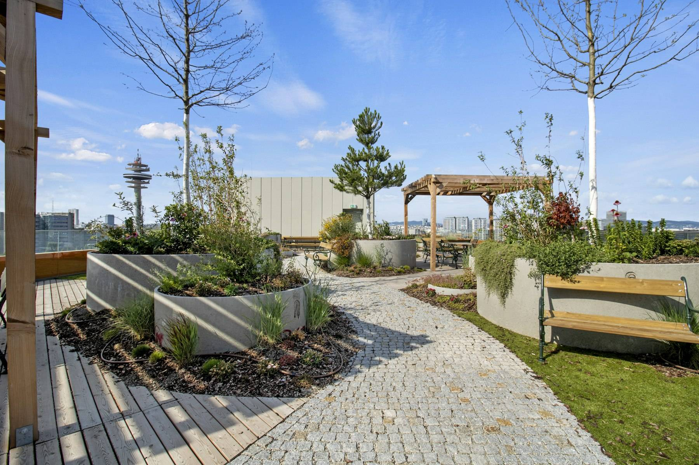

Le Campus
Former les professionnels dont la rénovation a besoin.
Le Campus est le volet formation de l’Iseeer. Il prépare des étudiants et des professionnels en poste à des métiers où il faut savoir à la fois concevoir, construire, gérer et financer, tout en réduisant la consommation d’énergie et l’empreinte des bâtiments.
- Premier campus
- Saint-Ouen-sur-Seine
- Rentrée
- Janvier 2027

Le constat
Pourquoi ce campus
Les métiers de la ville ont appris à travailler chacun de leur côté. La rénovation leur demande l’inverse. Or les formations qui croisent l’ingénierie du bâtiment, la performance environnementale et l’adaptation au climat restent rares, du Bac+2 au Bac+5 comme en formation continue. Beaucoup d’ingénieurs environnement viennent aujourd’hui de la sécurité en entreprise, de l’énergie ou de la chimie, et découvrent le bâtiment sur le tas.
Le besoin est chiffré : environ 650 000 personnes sont à former à la rénovation d’ici 2030.
Le secteur a aussi vu partir, ces dernières années, des compétences qu’il faudra retenir ou faire évoluer. Le Campus s’adresse autant à ceux qui entrent dans le métier qu’à ceux qui y sont déjà.
Les cursus
Ce qu’on y apprend

Les cursus mêlent les matières de l’immobilier et celles de l’environnement, à parts égales, avec une part dédiée à l’adaptation au changement climatique : confort d’été, choix des matériaux et des isolants, végétalisation, îlots de chaleur.
L’enseignement suit la chaîne du bâti, en cycles :
- politique de la ville et aménagement des territoires, pour les collectivités, les aménageurs et les élus ;
- construction et rénovation, pour la maîtrise d’ouvrage, la maîtrise d’œuvre et les entreprises ;
- un troisième cycle, consacré à la gestion et à l’exploitation des bâtiments.
Les publics
Pour qui
- Étudiants et alternants
- Des parcours de Bac+2 à Bac+5, en formation initiale, ouverts à l’alternance.
- Professionnels en poste
- Des formations courtes pour élargir son métier ou se spécialiser, seul ou avec son équipe.
- Personnes en reconversion
- Pour celles et ceux qui veulent rejoindre la filière, ou y revenir.
- Collectivités et élus
- Un cycle dédié à l’aménagement et à l’adaptation des territoires.
- Entreprises
- Former ses équipes, accueillir un alternant, construire un parcours sur mesure.
Fiches formations
Les formations
Les intitulés, les niveaux, les durées et les conditions d’admission seront publiés ici dès qu’ils seront arrêtés, avec une fiche par formation.
Laissez vos coordonnées pour être prévenu de leur ouverture et des réunions d’information.
Le lieu
Le campus de Saint-Ouen-sur-Seine
Nexity accueille le premier campus de l’Iseeer dans son siège, l’immeuble Reiwa, 67 rue Arago à Saint-Ouen-sur-Seine : environ 1 000 m² de salles de cours et d’espaces de travail, en Seine-Saint-Denis. Le bâtiment, dessiné par l’agence Brenac & Gonzalez, compte huit étages de bureaux et de terrasses plantées.
D’autres campus pourront ouvrir ailleurs en France.

Financement
Financer sa formation
Les possibilités de financement (alternance, plan de développement des compétences de l’entreprise, opérateurs de compétences) seront indiquées sur chaque fiche formation.
Le Campus
Contact
Le Campus est dirigé par Anissa Bouhalassa, directrice générale déléguée.
seformer@iseeer.fr